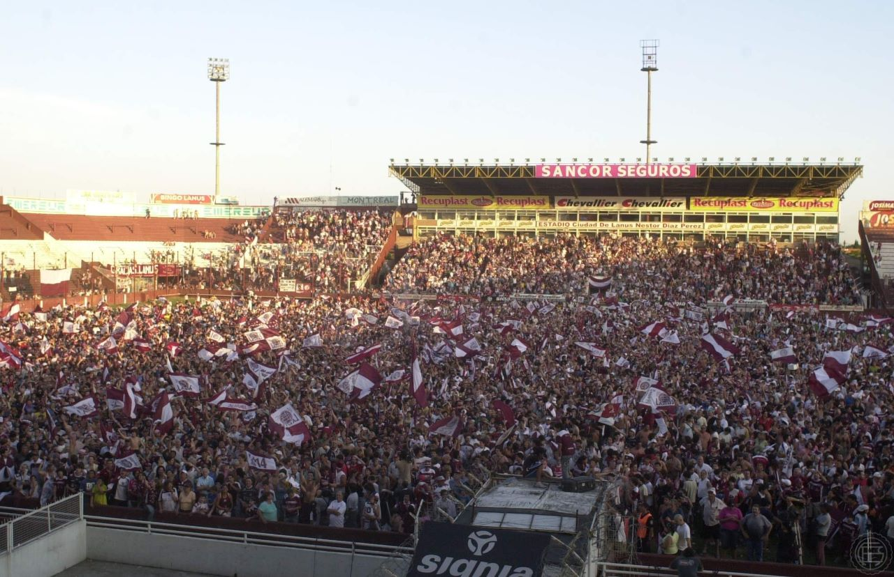
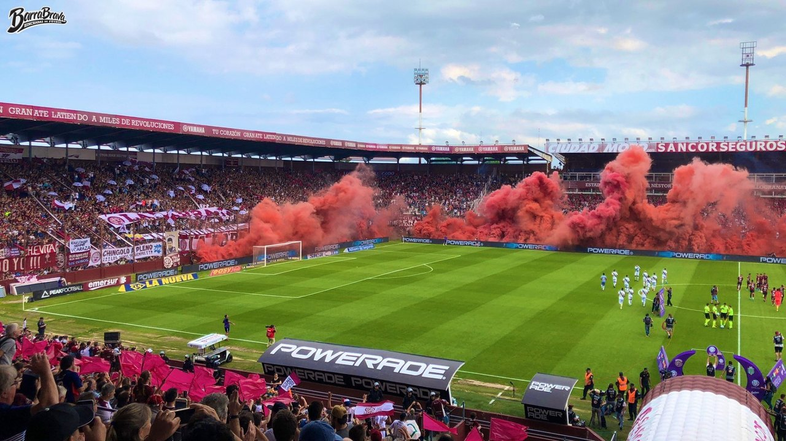

Un Día Dedicado a la Pasión Granate
Este evento está dedicado a nuestros fieles hinchas, una oportunidad única para reunirse y celebrar el espíritu granate. Con actividades especiales, sorteos, y la presencia de jugadores históricos, esta fiesta es para todos los que viven y sienten el amor por Lanús.
Actividades de la Fiesta
- Encuentros con jugadores legendarios del club
- Firmas de autógrafos y fotografías
- Zona de juegos para niños y actividades familiares
- Stands con productos oficiales del club
Detalles del Evento
La fiesta comenzará a las 14:00 horas y finalizará a las 21:00 horas. Durante toda la jornada, habrá presentaciones en vivo de artistas locales, sorteos exclusivos para los socios del club, y una experiencia interactiva para conocer más sobre la historia de Lanús.
Recomendaciones
- Llega temprano para disfrutar de todas las actividades.
- Lleva tu carnet de socio y DNI para participar en los sorteos.
- Usa ropa cómoda y recuerda hidratarte durante el evento.
- Sigue las indicaciones del personal del estadio para una experiencia segura.
Te esperamos para vivir una jornada inolvidable. ¡Vamos Lanús!